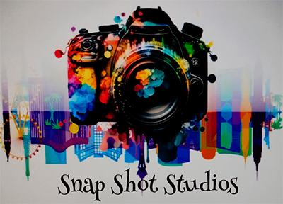
Painting With Light began in Fall 2024, when I started photographing reflective metals and discovered how dramatically light could reshape their surfaces. What began with a saxophone and a light stick grew into an exploration of shifting colors, patterns, and the expressive potential of illuminated metal. That early experimentation sparked a deeper fascination with jazz instruments and the way light can echo rhythm, tone, and energy. As the work evolved, I became increasingly drawn to the parallels between sound and light. Music moves through rhythm, tempo, and emotion — and light, too, can pulse, flow, and create a visual harmony that mirrors those same qualities. In this series, the interplay of color, reflection, and form becomes a kind of visual jazz: fluid, dynamic, and alive. Painting With Light invites viewers to experience music in a new way — to see sound translated into color, motion, and luminous texture. It is an exploration of how light becomes its own instrument, shaping a dialogue between what we hear and what we see.
The series that started it all — light, motion, and music fused into one.
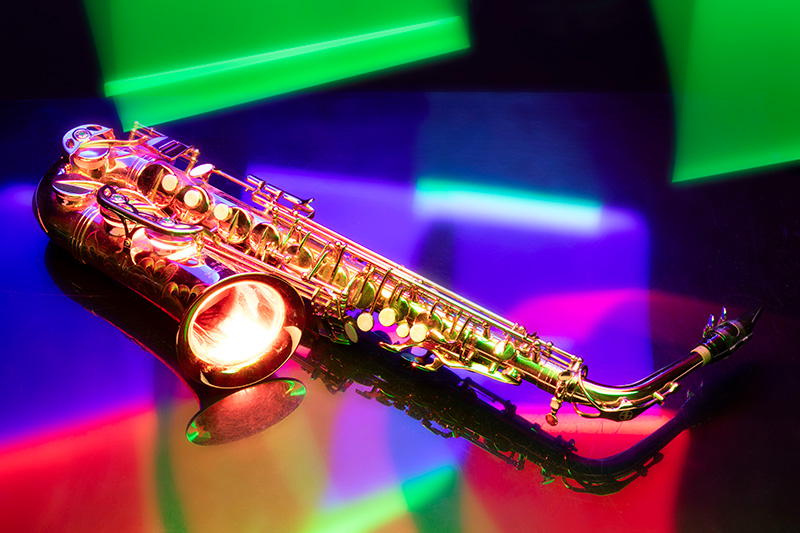
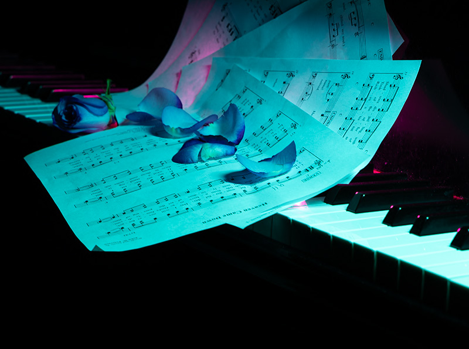
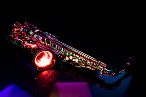
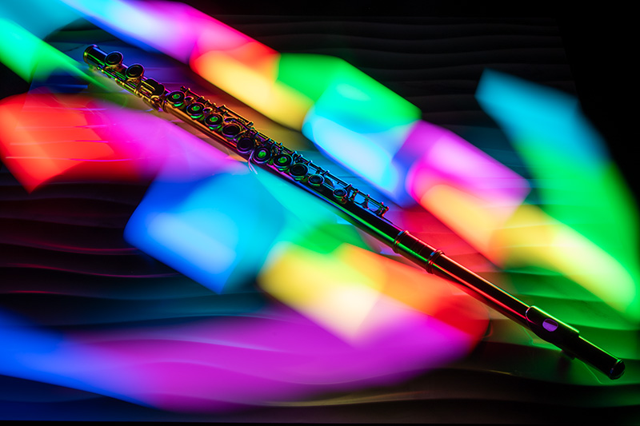
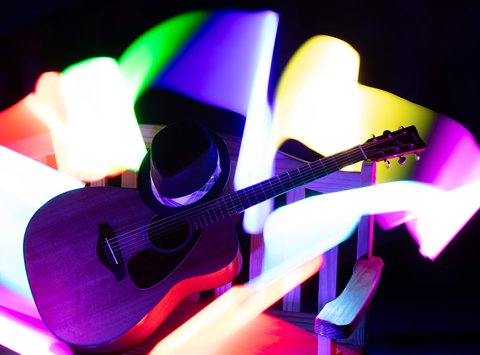
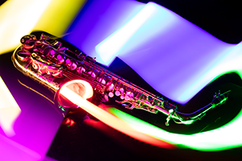
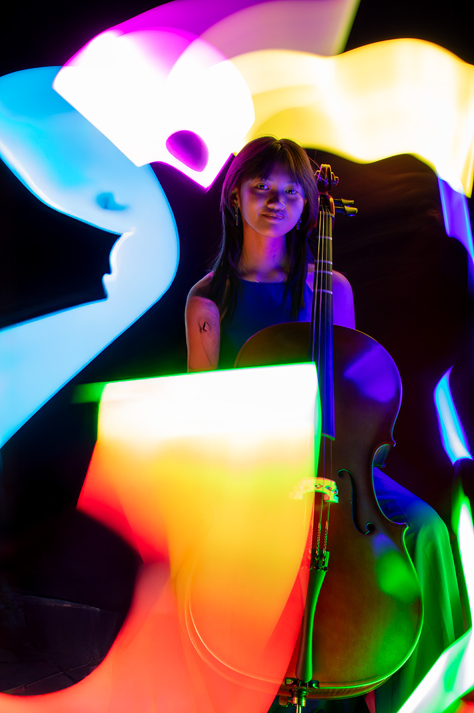
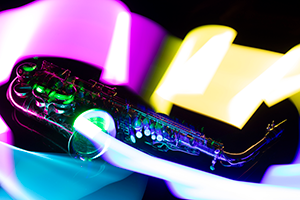
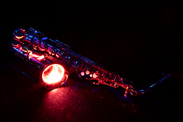
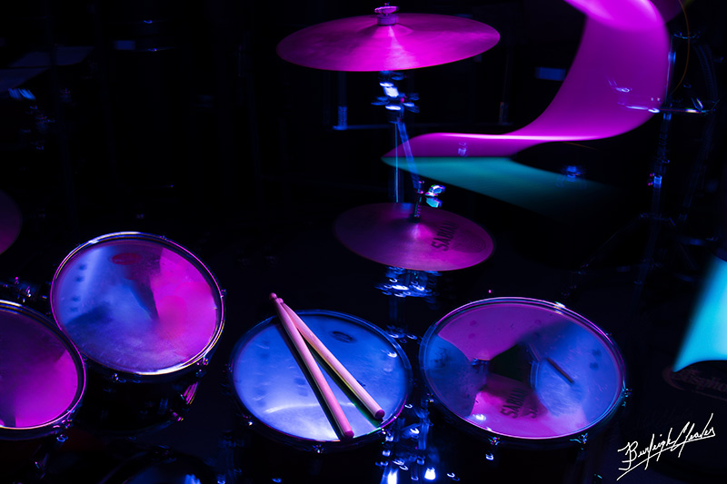
When Painting With Light meets portraiture, emotion steps into the spotlight.
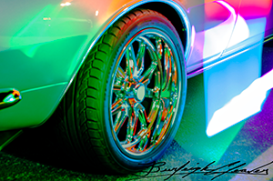
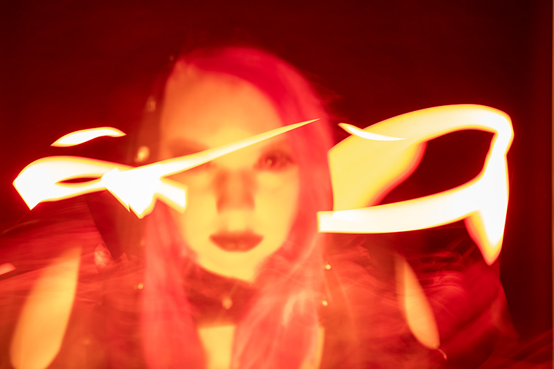
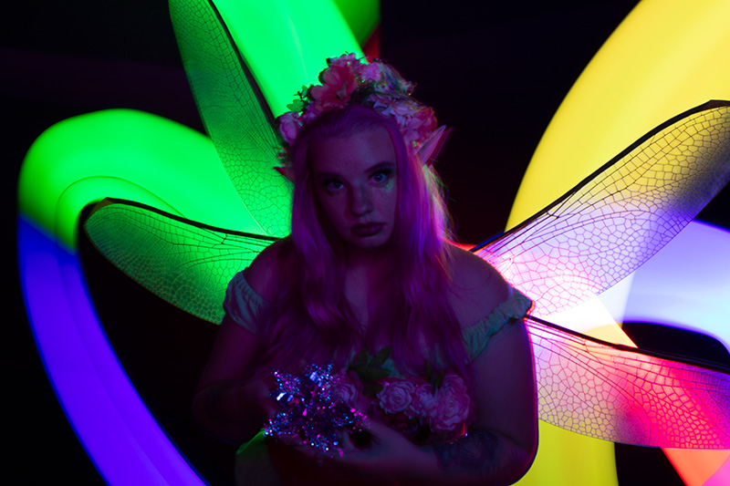
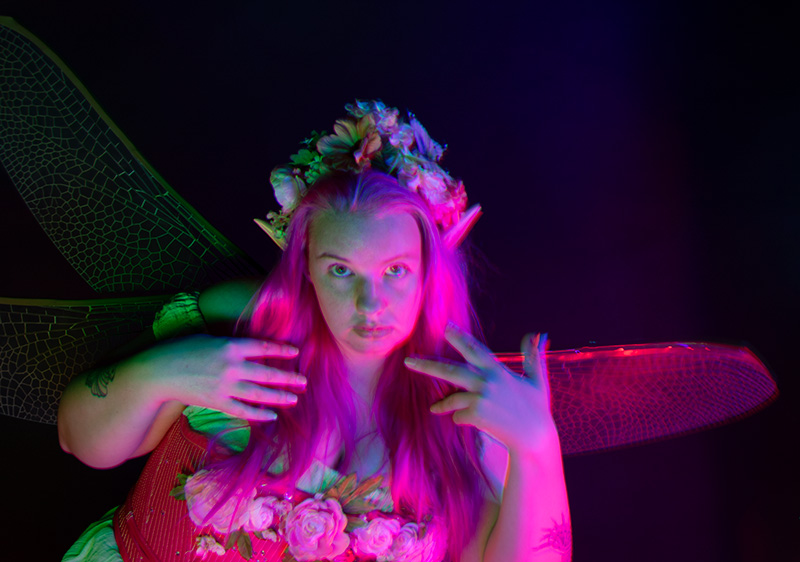
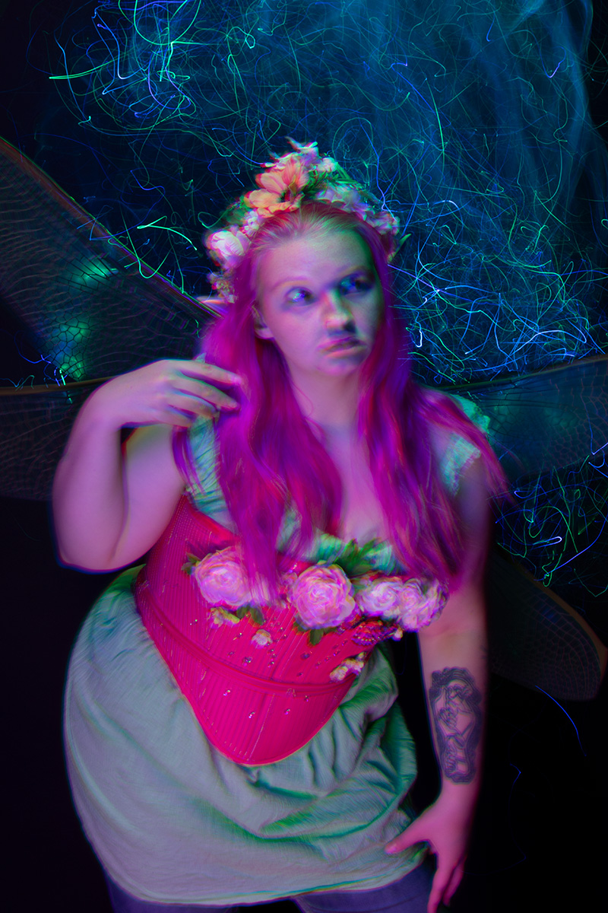
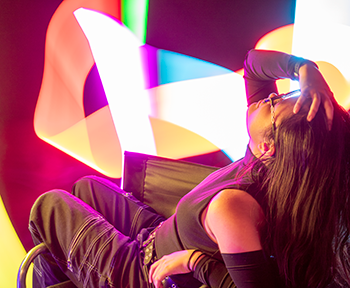
Long exposure, controlled motion, and intentional light strokes create these glowing effects. Every image is crafted in-camera — no AI, no overlays, just pure photographic technique.